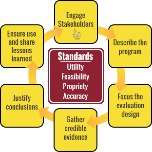

Lesson 1
Overview of Policy Evaluation
Page 13 of 17
Distinct Aspects of Policy Evaluation
The CDC Evaluation Framework, continued
Select each part of the graphic to review a description of each step and the categories
of standards outlined in the Framework. For more information, visit the
CDC evaluation site.

Engaging Stakeholders
This part of the framework entails involving those people and organizations with a direct interest in the evaluation and the evaluation process.
Additional details are included in the document,
Engaging Stakeholders.
Describing the Program
In this step, you develop a clear description of the intervention including purpose, activities, and intended outcomes/impact.
Additional details are included in the document,
Describing the Program.
Focusing Evaluation Design
Focusing the evaluation design involves deciding what questions the evaluation will answer and what design and methodology will be needed to answer the questions.
Additional details are included in the document,
Focusing the Evaluation Design.
Gathering Credible Evidence
In this step, you will identify how to measure selected outcomes and indicators, and collect the required data.
Additional details are included in the document,
Gathering Credible Evidence.
Justifying Conclusions
This step involves examining evidence collected and testing conclusions against criteria agreed upon by stakeholders.
Additional details are included in the document,
Justifying Conclusions.
Ensuring Use of Findings and Sharing Lessons Learned
You will need to ensure the application of evaluation results by designing the evaluation to achieve intended use of stakeholders, providing feedback to stakeholders, disseminating results of the evaluation to target audiences, and following-up on the use of the results.
Additional details are included in the document,
Ensuring Use and Sharing Lessons Learned.
Categories of Standards
The framework also includes a list of standards that are important to keep in mind when conducting any type of evaluation. These standards are categorized into four groups, and the framework asks you to apply each of these four groups as a “lens” to help isolate the best approaches at each step.
|
UTILITY |
Who wants the evaluation results and for what purpose? |
| FEASIBILITY |
Are the evaluation procedures practical, given the time, resources, and expertise available? |
| PROPRIETY |
Is the evaluation being conducted in a fair and ethical way? |
| ACCURACY |
Are the approaches at each step accurate, given the needs of the stakeholders and the purpose of the evaluation? |
These standards don’t dictate how to conduct an evaluation; rather, they help assess the many options at each of the six steps and choose the options that are best suited to the particular evaluation.
Select this link to view a text alternative.
Select the highlighted text and each part of the graphic to learn more. Then select NEXT.
Exit